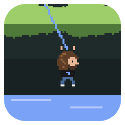
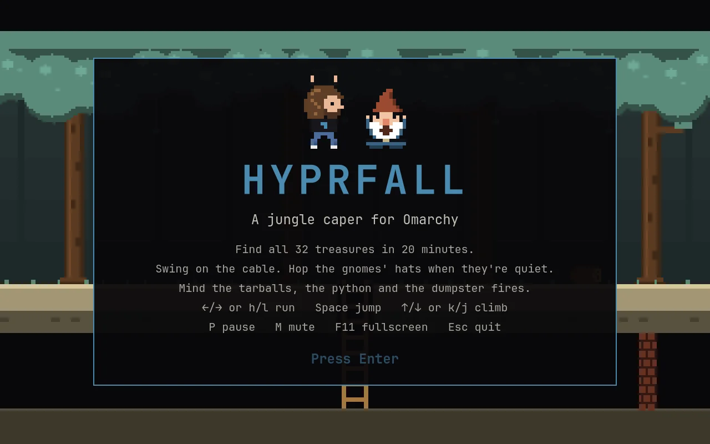
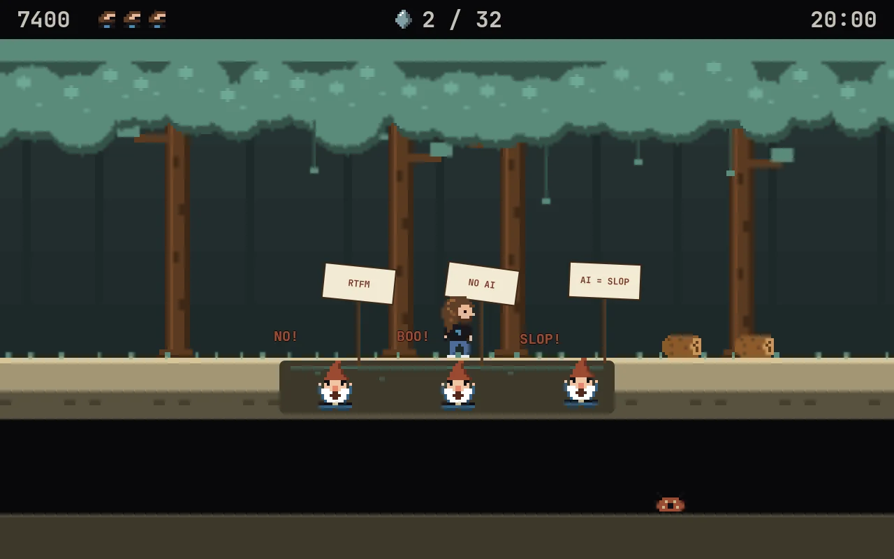
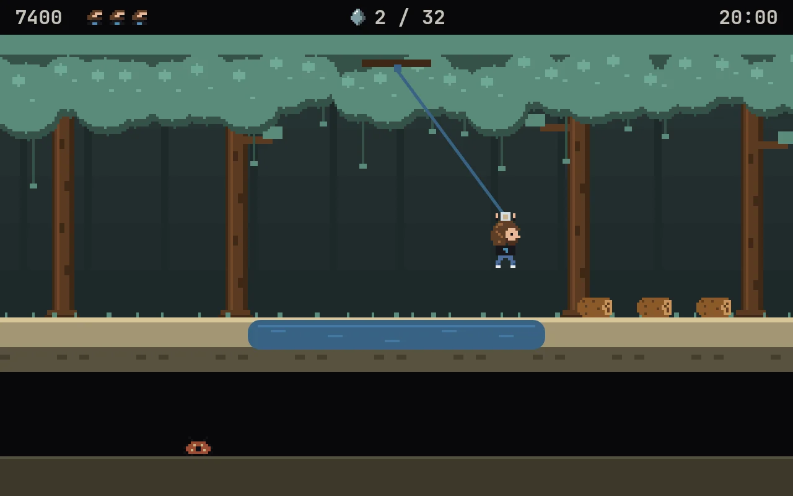
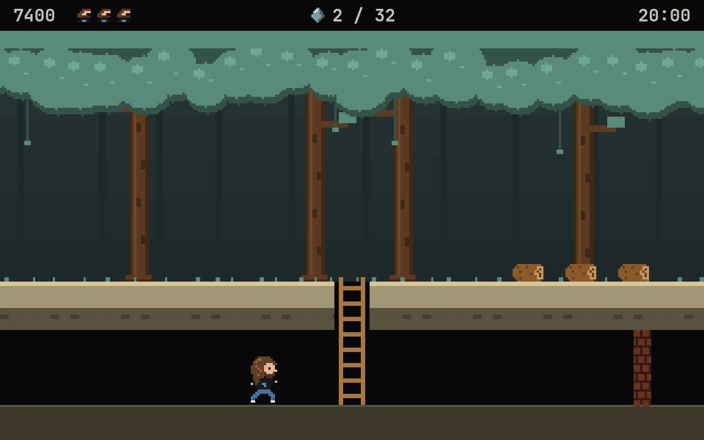
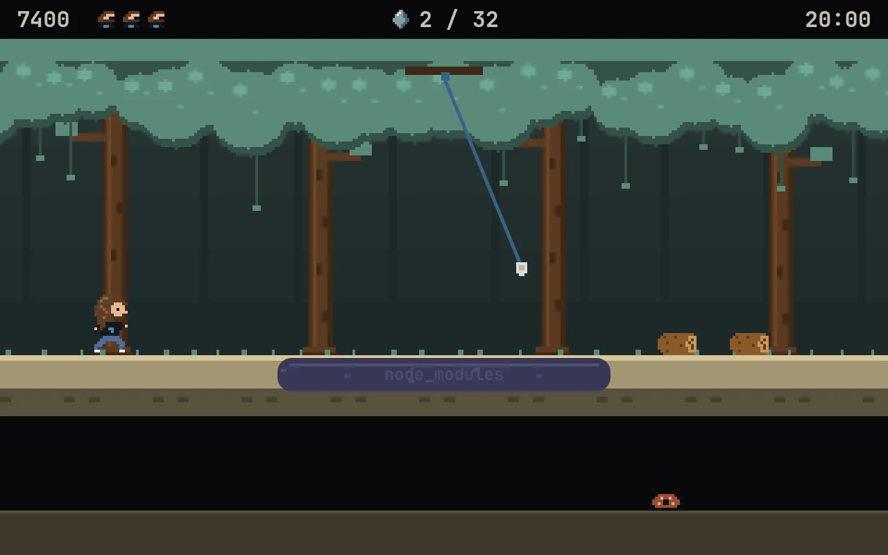
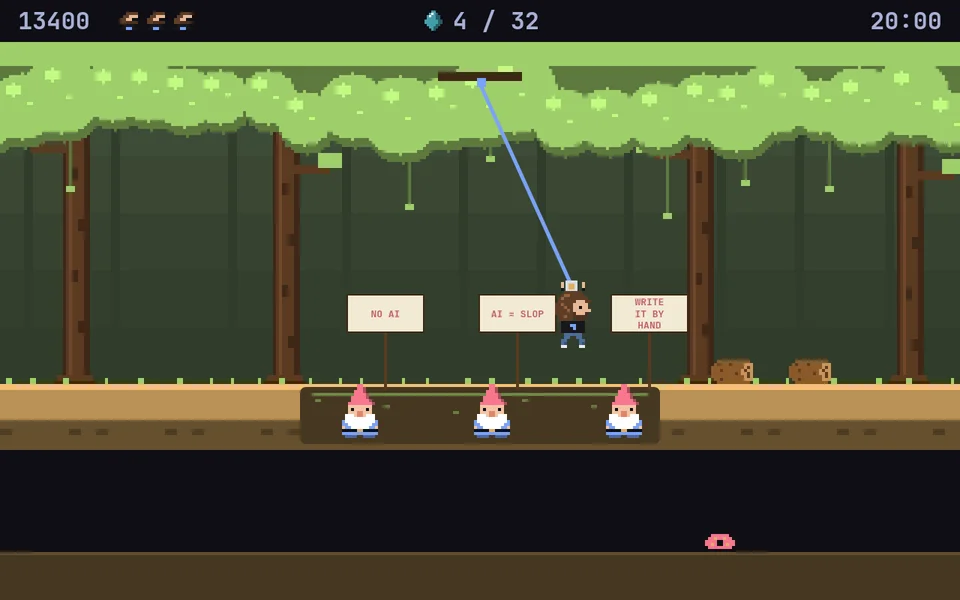

An ethernet cable
Jump for the plug and swing. Lean the way you want to go and let go: the swing flings you across. Fumble it and enjoy the tar.

HyprfallInsert coin · Player 1 · Omarchy
Swing on the cable. Hop the gnomes. Don't fall in the node_modules.
Click a theme. That's what omarchy theme set does to the jungle, live, mid-swing.
You held a joystick with one stiff red button, ran right for about a thousand screens, and screamed at a crocodile. That crocodile still owes you an apology.
Hyprfall is a jungle platformer in that spirit, built as a native Omarchy app. Our hero (a certain Danish racing driver with shoulder-length hair, a beard and a black tee) has twenty minutes to find 32 treasures scattered across 255 screens of jungle. Between him and the loot: tarballs, dependency hell, a python, the odd dumpster fire, and a pit full of garden gnomes waving picket signs that say NO AI.

Jump for the plug and swing. Lean the way you want to go and let go: the swing flings you across. Fumble it and enjoy the tar.
Garden gnomes in a pit, signs up: RTFM, STOP VIBING, WRITE IT BY HAND. Quiet, their hats are stepping stones. Yelling? Get off.
journalctl -f, but it rolls at you. Costs points, not lives.
Jump it like it's a Monday.
Bites. Should've used Ruby.
Every project has one. This one is literal, and it is not a learning opportunity.
Take a ladder down and every screen underground skips three up top. Mind the firewalls. The bug works on its machine.
Find all 32 before the clock hits 0:00. Three lives. Falling down a hole costs 100. Same 255 screens every game, so you can learn the jungle like it's 1983.




The canopy is your theme's green, the swamp its blue, the logo on the hero's tee its accent, the gnomes' hats its red. Change themes mid-game and the jungle repaints itself while you play. Skin, hair and wood stay put, so the hero always looks like himself.

The same engine as the Omarchy shell. No Electron, no browser, no emulator. On Omarchy, nothing extra to install.
Opens as a centered, floating 16:10 window sized to your monitor. Launch it again and it focuses the one that's open. F11 for fullscreen.
h l to run, k j to climb. Of course they do.
Code, pixels and an adventure-rock soundtrack, all made from scratch. The music comes out of a little synth in the repo.
Every release ships an Arch/Omarchy package, a .deb and an
.rpm. Each one is installed on its distro and the game run from it before
the release goes out.
Installs it from GitHub releases and keeps it updated. What's that?
autonomix-cli add https://github.com/ninepointlabs/hyprfallDownload the .deb. On Debian 13, Quickshell comes from trixie-backports; Debian 14, sid and Ubuntu 26.10+ have it built in.
sudo apt install -t trixie-backports ./hyprfall_*_all.debgit clone https://github.com/ninepointlabs/hyprfall ~/Projects/hyprfall
cd ~/Projects/hyprfall && ./install.sh| ← → · h l · a d | Run |
| Space (or ↑ away from ladders) | Jump |
| ↑ ↓ · k j | Climb; ↓ or Space lets go of the cable |
| P · Esc | Pause |
| M · F11 | Mute · fullscreen |
| F1 | About: version, license, privacy, support |